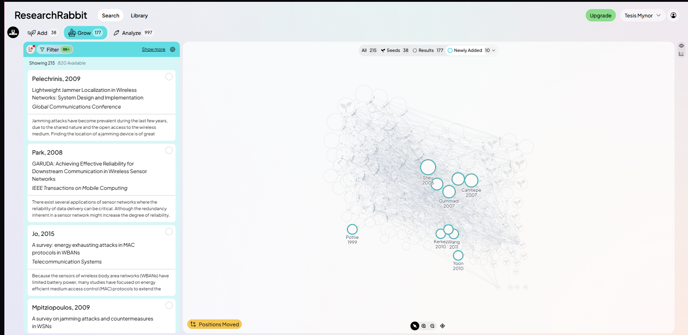
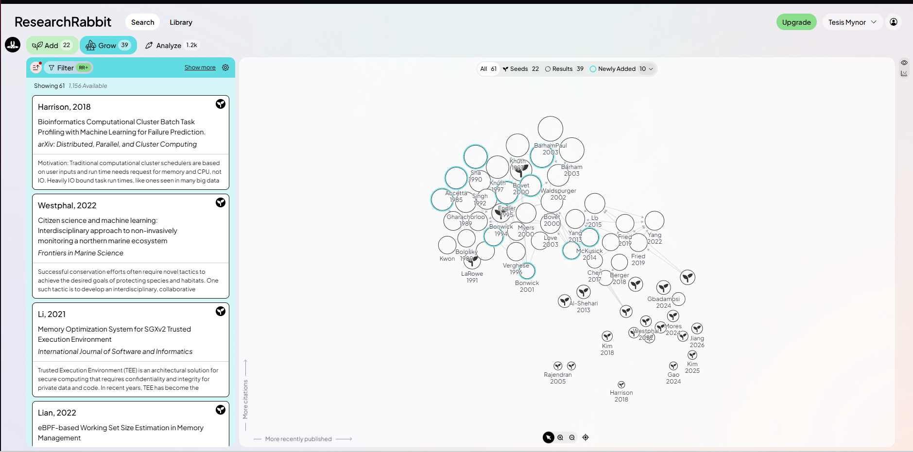
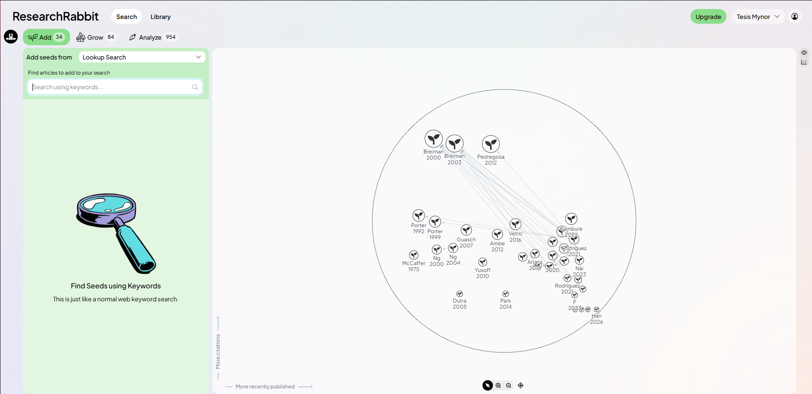

Con apoyo de inteligencia artificial cribé un volumen mucho mayor de papers por etapas, como pide el embudo, y verifiqué en línea los pilares de cada idea.
candidatos · 35 cribados · 8 pilares
candidatos · 26 cribados · 8 pilares
candidatos · 30 cribados · 9 pilares


